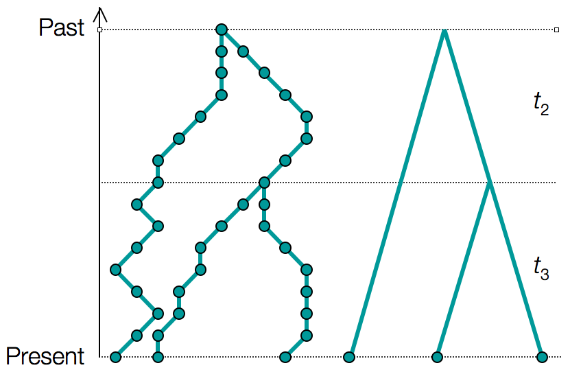
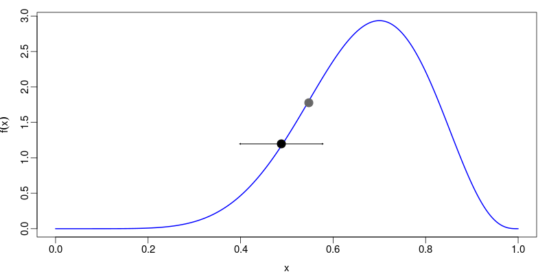
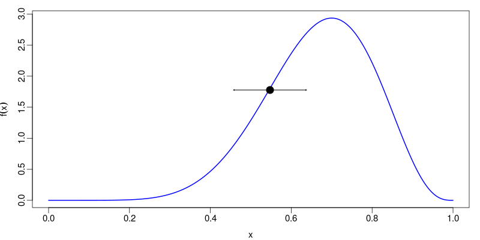
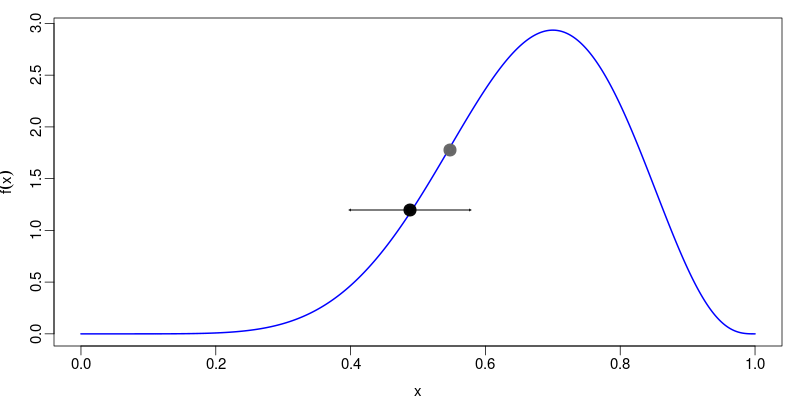
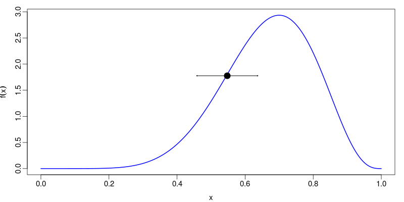

UPGMA weaknesses
Distances
| A | B | C | D | |
| A | 0 | |||
| B | 8 | 0 | ||
| C | 7 | 9 | 0 | |
| D | 12 | 14 | 11 | 0 |

There is a (non clock-like) tree with a different topology that fits the distance matrix perfectly!
x' = a - c g g - t s
y' = a w - g c c t t
The score matrix (or substitution matrix) $s$ contains the column scores of every possible pair. A column with the character pair $a,b$ is given by the matrix entry $s(a,b)$.
| Optimal alignment |
$y_1, y_2, y_3, \ldots, y_j$
$x_1, x_2, x_3, \ldots, x_i$
|
$F(i,j)$ |
| Comes from... |
$y_1, y_2, y_3, \ldots, y_{j-1}$
$y_j$
$x_1, x_2, x_3, \ldots, x_{i-1}$
$x_i$
|
$F(i-1,j-1) + s(x_i,y_j)$ |
| Or... |
$y_1, y_2, y_3, \ldots, y_{j-1}$
$y_j$
$x_1, x_2, x_3, \ldots, x_{i}$
$\phantom{x_i}$
|
$F(i,j-1) - d$ |
| Or... |
$y_1, y_2, y_3, \ldots, y_{j}$
$\phantom{y_j}$
$x_1, x_2, x_3, \ldots, x_{i-1}$
$x_i$
|
$F(i-1,j) - d$ |
Therefore,
| Optimal alignment |
$y_s, y_{s+1}, y_{s+2}, \ldots, y_j$
$x_r, x_{r+1}, x_{r+2}, \ldots, x_i$
|
$F(i,j)$ |
| Comes from... |
$y_s, y_{s+1}, \ldots, y_{j-1}$
$y_j$
$x_r, x_{r+1}, \ldots, x_{i-1}$
$x_i$
|
$F(i-1,j-1) + s(x_i,y_j)$ |
| Or... |
$y_s, y_{s+1}, \ldots, y_{j-1}$
$y_j$
$x_r, x_{r+1}, \ldots, x_{i}$
$\phantom{x_i}$
|
$F(i,j-1) - d$ |
| Or... |
$y_s, y_{s+1}, \ldots, y_{j}$
$\phantom{y_j}$
$x_r, x_{r+1}, \ldots, x_{i-1}$
$x_i$
|
$F(i-1,j) - d$ |
| Or... |
$y_s, y_{s+1}, y_{s+2}, \ldots, y_{j}$
$x_r, x_{r+1}, x_{r+2}, \ldots, x_{i}$
|
$0$ |
| ABC | D | |
| ABC | 0 | |
| D | 12.33 | 0 |
| A | B | C | D | |
| A | 0 | |||
| B | 8 | 0 | ||
| C | 7 | 9 | 0 | |
| D | 12 | 14 | 11 | 0 |
$$\color{cyan}{P(\theta_M|D,M)} = \frac{\color{orange}{P(D|\theta_M,M)}\color{red}{P(\theta|M)}}{\color{lime}{P(D|M)}}$$
Here $\theta_M$ are parameters of some model $M$ and $D$ is data assumed to be generated by that model.
The components of the equation even have names:
A probability!
The probability of whatever you're interested in but in the absence of possibly relevant data.
In principle, any two (rational) people with access to the same information should specify exactly the same prior.
In practice this often isn't true.
NO!
- It is not possible to do inference without making assumptions.
- Priors allow previous knowledge to be incorporated.
- Frequentist (and Likelihoodist) methods also use priors: it's just not clear what they are!
Standard application of Bayes theorem gives the posterior:
$$P(T,\mu,\theta|D) = \frac{\Pr(D|T,\mu, \theta)P(T,\mu,\theta)}{\Pr(D)}$$But most phylogenetic models assume that $\theta$ only effects the probability of the data via the tree $T$, and likewise that $\mu$ has no effect on the tree branching process, leading to:
$$P(T,\mu,\theta|D) = \frac{1}{\Pr(D)}\Pr(D|T,\mu)P(T|\theta)P(\mu,\theta)$$
For a genealogy $g$ with coalescent times $\mathbf{t} = \{t_2, t_3, \dots, t_n\}$ we can write the probability density of the genealogy:
$$P(g|N)=\frac{1}{N^{n-1}}\prod_{k=2}^n\exp\left(-\frac{ {k \choose 2}t_k}{N}\right)\,.$$
The relaxed molecular clock parameterization
The "substitution tree" is in units of expected substitutions, i.e. genetic distances.
The relaxed molecular clock parameterization
The "substitution tree" is in units of expected substitutions, i.e. genetic distances.
k-mers: ATG, TGG, TGC, GTG, GGC, GCA, GCG, CGT
Distinct (k-1)-mers:
 


